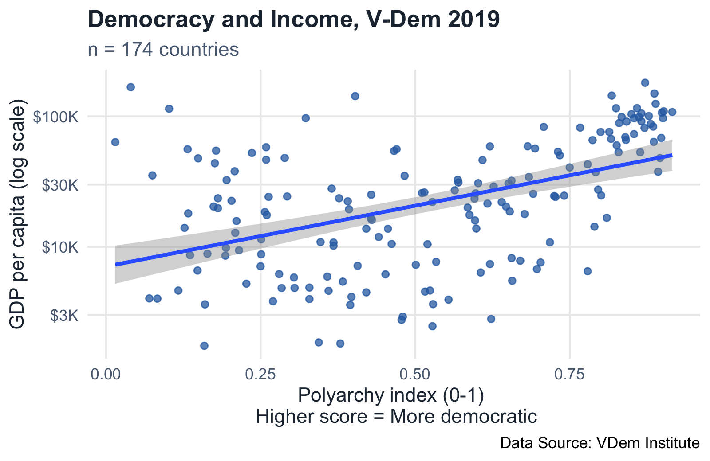
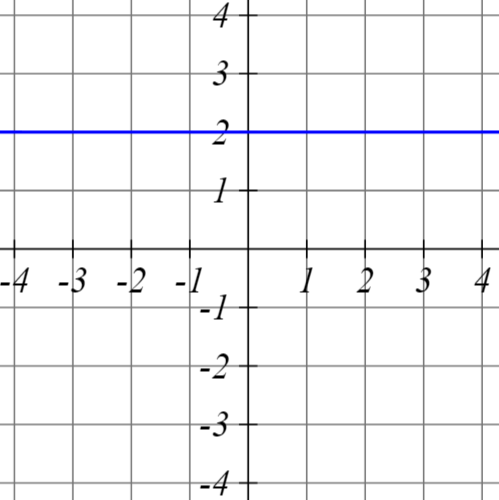
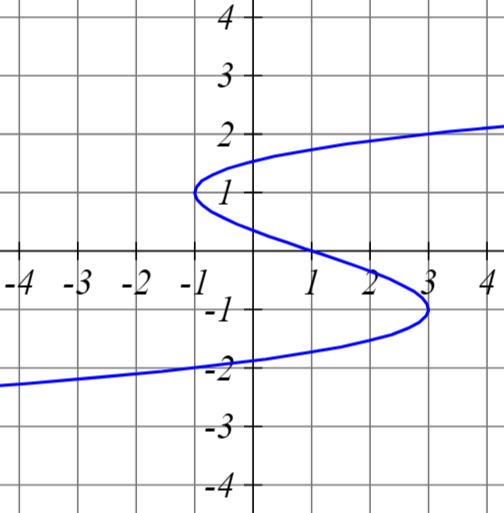
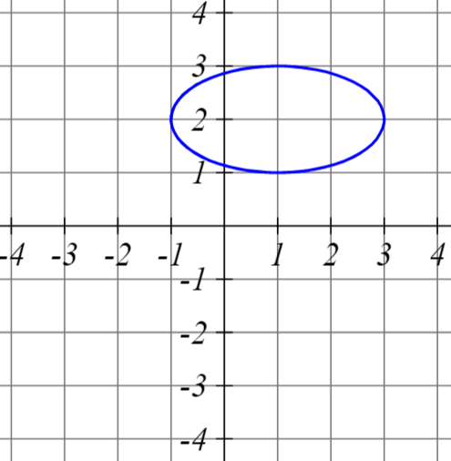
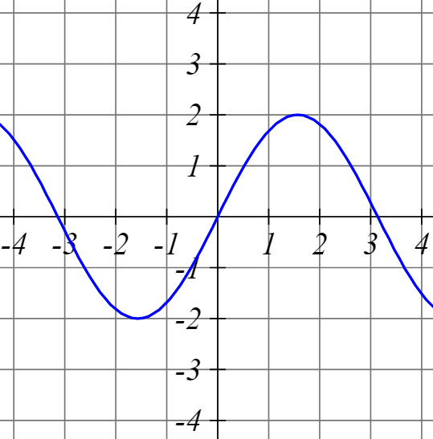
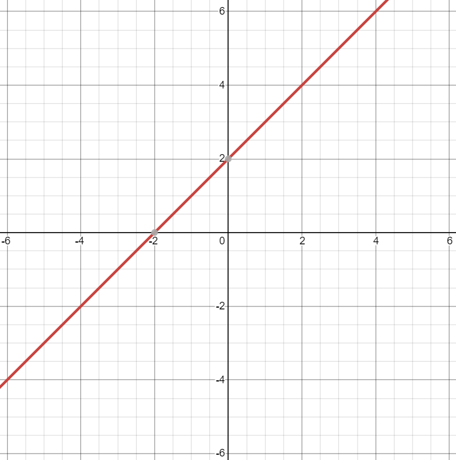
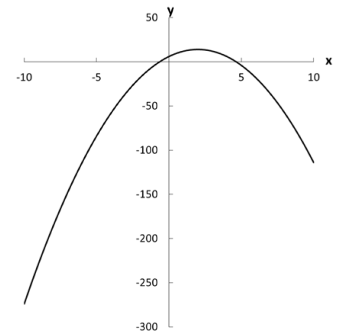
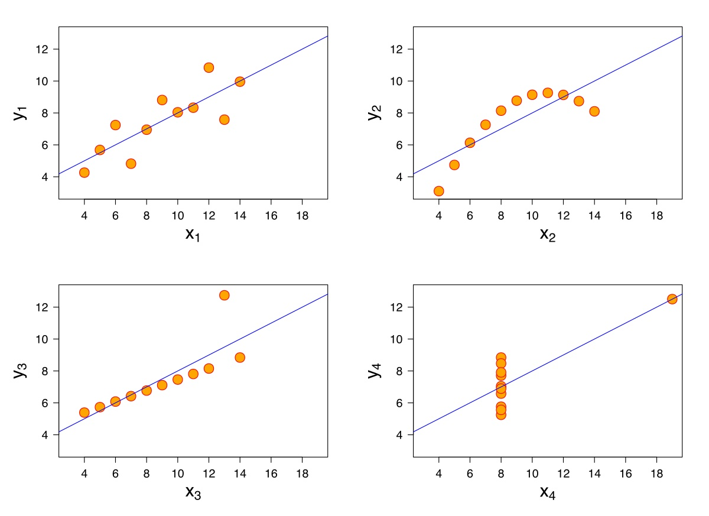

Special Functions and Finding Roots — exponents, logarithms, roots, solving equations.
Final Exercise — a worked example, start to finish.
Sets
Reading a dataset as a set, and the union/intersection operations we can do on it.
Democracy and Growth

Polyarchy (our measure of democracy) vs. GDP per capita, one dot per country. \(n = 174\).
The Same Data, as Sets
Polyarchy vs. GDP per capita, V-Dem 2019. n = 174.
Countries
{ , … }
Polyarchy
{ , … }
GDP per capita
{ , … }
showing 8 of 174 countries
Click to split the highlighted points into three sets →
All the Values It Could Take
Every dot’s polyarchy score is some value between 0 and 1.
The full range of values it could take — before we see any particular country — is its sample space.
Same idea for GDP per capita: some positive number, no fixed upper bound in principle.
Political scientists build claims about all of this range, not just the countries plotted here.
From the Picture to Notation
Polyarchy \(\in [0,1]\) — the sample space, written formally.
Each dot: one unit of analysis (a country), with a polyarchy value and a GDP value.
The threshold used to split “democracies” from “non-democracies”: \(D = 1\{\text{polyarchy} > 0.5\}\).
Where did 0.5 come from? (open question — we’ll come back to this)
To make statements like this precise, we need the formal language of sets.
Sets and Sample Spaces
A set is a collection of elements.
Common sets: Natural numbers (\(\mathbb{N}\)), Integers (\(\mathbb{Z}\)), Rational numbers (\(\mathbb{Q}\)), Real numbers (\(\mathbb{R}\)), etc.
A set can be:
Finite or infinite:\(\mathbb{Z}\) is infinite, but all the integers from 1 to 10 is finite.
Countable or uncountable: a countable set is one whose each of its elements can be associated with a natural number (or an integer).
Bounded or unbounded: A bounded set has finite size (but may have infinite elements).
Some important sets that we are going to use as political scientists:
Solution set: a set that contains all solutions for an equation
Sample space: a set that contains all values that a variable can take.
↪ Running example: our sample space is Ω = {174 countries}; each country's polyarchy score is one element of [0,1].
Unions and Intersections
Much as sets contain elements, they also can contain, and be contained by, other sets.
Notation:
\(A \subset B\): “A is a proper subset of B” implies that set B contains all the elements in A, plus at least one more
\(A \subseteq B\): “A is a subset of B”. In this case, it allows A and B to be the same.
Intersection:\(A \cap B\). The set of elements common to two sets.
Union:\(A \cup B\). The set that contains all elements in both sets.
Mutually exclusive sets: the intersection is the empty set.
↪ Running example: {polyarchy > 0.5} ∩ {GDP per capita > $30k} — the overlap our hypothesis is really about.
\(A \subset B\) (Proper Subset)
↪ Running example: {Nordic democracies} ⊂ {polyarchy > 0.5} — a proper subset of our "democracies."
\(A \cap B\) (Intersection)
↪ Running example: {high polyarchy} ∩ {high GDP per capita} — exactly the cell selection bias is about.
\(A \cup B\) (Union)
↪ Running example: {high polyarchy} ∪ {high GDP per capita} — every country in at least one of our comparison groups.
\(A \cap B = \emptyset\) (Mutually Exclusive)
↪ Running example: {D=1} and {D=0} are mutually exclusive — a country can't be on both sides of the polyarchy > 0.5 threshold.
Essential Math Refresher
Levels of measurement, arithmetic, notation, and sequences — the toolkit everything else builds on.
Levels of Measurement (1/2)
Four levels, each subsuming the ones below it (Moore & Siegel 2013, ch. 1):
Nominal: differences of kind only — \(<, \le, =, \ge, >\) have no meaning.
e.g. gender, party affiliation
Ordinal: differences of degree, with meaningful order (\(<, \le, =, \ge, >\) apply) — but distance between values isn’t constant, so addition/subtraction don’t make sense.
e.g. self-placed ideology (far left … far right)
Levels of Measurement (2/2)
Interval: order and a constant distance between values — addition/subtraction are meaningful, but zero isn’t.
e.g. feeling thermometer (0–100; 0 isn’t “no feeling”)
Ratio: interval, plus a meaningful zero — multiplication/division (ratios) are also meaningful.
e.g. government spending, event counts (wars, vetoes)
Discrete vs. continuous cuts across interval/ratio: discrete = countable, continuous = not.
The number below \(\sum\) is where the index \(i\) starts; the number above is where it stops. Everything to the right (which must involve \(i\)) is what gets added at each step.
Rules of Summation
\(\sum\limits_{i=1}^{n} c\,x_i = c\sum\limits_{i=1}^{n} x_i\) — a constant factor can be pulled out front.
\(\sum\limits_{i=1}^{n} (x_i + y_i) = \sum\limits_{i=1}^{n} x_i + \sum\limits_{i=1}^{n} y_i\) — a sum of sums splits apart.
\(\sum\limits_{i=1}^{n} c = nc\) — adding the same constant \(n\) times is just \(n\) times that constant.
Product Notation
\(\prod\) works the same way as \(\sum\), but multiplies instead of adds: \(\prod\limits_{i=1}^{n} x_i = x_1 \cdot x_2 \cdots x_n\)
\(\prod\limits_{i=1}^{n} c\,x_i = c^{n}\prod\limits_{i=1}^{n} x_i\) — pulling out a constant costs you an exponent \(n\), since it’s multiplied in \(n\) times.
\(\prod\limits_{i=1}^{n} c = c^{n}\)
Unlike summation, \(\prod\limits_{i=1}^{n} (x_i + y_i)\) does not simplify nicely — multiplication doesn’t distribute across a sum of sequences the way addition distributes across sums.
Factorials and Modulo
Factorial:\(x! = x \cdot (x-1) \cdot (x-2) \cdots 1\) — multiply a whole number down to 1.
Mappings between sets, domain and range, and the shapes a relationship can take.
Functions as Mappings
A function maps every element of one set (the input) to exactly one element of another set (the output) — never to more than one.
What a function can never do is send a single input to two different outputs — that’s the one property that actually defines “function.”
Function or Not? — Visualized
\(x_1\) pointing to both \(y_1\) and \(y_2\) is what breaks it — everything else about the diagram (shared outputs, an unused \(y\)) is still fine for a function.
Graph Examples
In which of these graphs can we observe a function?

a)

b)

c)

d)
Graph Examples — Answer
a) and d) are functions — for every \(x\) there’s exactly one \(y\).
a) ✓ function
b)
c)
d) ✓ function
Domain, Range, and Image
Domain: the set of inputs where \(f(x)\) is actually defined.
Range (or image): the set of outputs \(f\) actually produces, \(f(X) = \{y : y = f(x),\, x \in X\}\).
Some functions aren’t defined everywhere — e.g. \(f(x) = \sqrt{x}\) has domain \([0,\infty)\), not all of \(\mathbb{R}^1\).
Domain, Codomain, and Range — Visualized
\(x_1\) and \(x_2\) both map to \(y_1\) — many-to-one is still a function.
\(y_2\) and \(y_5\) sit in the codomain but are never hit — they’re not in the range.
Range \(\subseteq\) Codomain, always. They’re only equal when every element of \(B\) gets used.
Functions and Their Characteristics
Functions give a specific description of the relationship between two (or more) concepts (in theory) or variables (in data).
Noted as \(f(x): A \to B\), read “\(f\) maps \(A\) into \(B\).”
\(A\) is the domain — the set of possible \(x\) values.
\(B\) is the codomain — the set of possible \(y\) values.
To be a function, there must be exactly one value in the range (\(y\)) for each value in the domain (\(x\)).
One-to-One vs. Many-to-One
Many-to-one: several different inputs can share the same output — still a function.
One-to-one: every input has its own distinct output — also a function.
One-to-One vs. Many-to-One — Visualized
Both diagrams are still valid functions — the only question is whether any \(y\) gets hit more than once.
Quick Drill: One-to-One or Many-to-One?
For \(x \in [0,\infty)\), \(f(x) = x^2\). One-to-one — on this restricted domain, each output has only one input.
For \(x \in (-\infty,\infty)\), \(f(x) = x^2\). Many-to-one — both \(2\) and \(-2\) map to \(4\).
Dimensionality
\(\mathbb{R}^1\) is the set of all real numbers extending from \(-\infty\) to \(\infty\) — i.e., the real number line.
\(\mathbb{R}^2\) is two-dimensional — a plane; \(\mathbb{R}^3\) is three-dimensional — a space; and so on for \(\mathbb{R}^n\).
A point in \(\mathbb{R}^n\) is an ordered \(n\)-tuple — an ordered combination of \(n\) elements, where order matters — and each element of the tuple is the coordinate along that dimension.
\(\mathbb{R}^1\): a point like \((3)\).
\(\mathbb{R}^2\): a point like \((-15, 5)\).
\(\mathbb{R}^3\): a point like \((86, 4, 0)\).
Dimensionality, as Sets
\(\mathbb{R}^n\) is just the Cartesian product of \(\mathbb{R}\) with itself, \(n\) times — the set of all ordered \(n\)-tuples you can build by picking one number from each copy of \(\mathbb{R}\).
$\mathbb{R}^1$ — a line 1-tuple: $(x)$
$\mathbb{R}^2$ — a plane 2-tuple: $(x, y)$
$\mathbb{R}^3$ — a space 3-tuple: $(x, y, z)$
\(\mathbb{R}^2 = \mathbb{R} \times \mathbb{R} = \{(x,y) : x \in \mathbb{R},\, y \in \mathbb{R}\}\) — every ordered pair you get by picking one value from each set.
\(\mathbb{R}^n = \underbrace{\mathbb{R} \times \mathbb{R} \times \cdots \times \mathbb{R}}_{n \text{ times}}\) — the set of all ordered \(n\)-tuples of real numbers.
Same idea as the sets we started with — we’re just crossing \(\mathbb{R}\) with itself instead of crossing two different variables.
Function Notation
One variable in, one variable out: \(f: \mathbb{R}^1 \to \mathbb{R}^1\), e.g. \(f(x) = x + 1\).
Two variables in, one out: \(f: \mathbb{R}^2 \to \mathbb{R}^1\), e.g. \(f(x,y) = x^2 + y^2\) — every ordered pair \((x,y)\) maps to a single number.
We usually call the input \(x\) and the output \(y\): \(y = f(x)\).
Types of Functions
Monomial:\(f(x) = ax^{k}\) — one term; \(a\) is the coefficient, \(k\) the degree. E.g. \(y = x^2\).
Polynomial: a sum of monomials, e.g. \(y = -\tfrac{1}{2}x^3 + x^2\). Its degree is the highest degree among its terms.
Exponential: the variable is in the exponent, e.g. \(y = 2^x\) — grows (or shrinks) multiplicatively rather than additively.
Function Composition
We can chain multiple functions using function composition.
This is written either as \(g \circ f(x)\) or \(g(f(x))\).
It is read as “\(g\) composed with \(f\)” or “\(g\) of \(f\) of \(x\)”
Generally, \(g \circ f(x) \neq f \circ g(x)\)
Example: Suppose \(f(x)=2x\) and \(g(x)=x^{3}\)
\(g \circ f(x)=(2x)^{3}=8x^{3}\)
\(f \circ g(x)=2(x^{3})=2x^{3}\)
Examples of Functions of One Variable — Linear Equation

y = 2 + x
This is the classic linear equation \(y=a+bx\) or \(y=mx+n\)
\(a\) and \(b\) are constants and \(x\) is the variable.
\(a\) is the intercept and \(b\) is the slope of the line, or the amount that \(y\) changes given a one-unit increase in \(x\).
Examples of Functions of One Variable — Quadratic Function

\(y=-2x^{2}+8x+6\)
This is the classical quadratic function: \(f(x)=ax^{2}+bx+c\) or \(f(x)=\alpha+\beta_{1}x+\beta_{2}x^{2}\)
If we set \(a>0\) (\(\beta_{2}>0\)) we get a curve shaped like a U (a convex parabola).
If we set \(a<0\) (\(\beta_{2}<0\)) we get a curve shaped like an inverse U (a concave parabola).
Functions and Theorizing
Functions are important for theorizing about politics
Most quantitative social science boils down to how two variables relate!
Our examples suggest a precise function between \(x\) and \(y\)
In statistics, you will theorize the functional form of the relationship
Statistical methods will estimate the most appropriate parameters; “a line of best fit”
Anscombe’s Quartet

Special Functions and Finding Roots
Exponents, logarithms, roots, and solving an equation for \(x\).
Exponents, Roots, and Logarithms
Exponential: \(x^{a}\)
Roots: \(\sqrt[a]{x}\) — can always be written as a fractional exponent, \(\sqrt[a]{x} = x^{1/a}\)
Logarithm: the inverse of an exponent. \(y = \log_a(x) \iff a^{y} = x\) — “what power do I raise \(a\) to, to get \(x\)?”
Base 10: written \(\log(x)\) with no base shown.
Base \(e\): the natural log, written \(\ln(x)\), with \(e \approx 2.7183\). Useful in calculus, and lets us interpret relationships in percentage-change terms.
This is exactly why maximum-likelihood estimation works with a log-likelihood: it turns a product of probabilities into a sum, which is far easier to differentiate.
We have eight polyarchy values from the running V-Dem example, \(x_1, \dots, x_8\), and their mean \(\bar x = \frac{1}{n}\sum_{i=1}^n x_i\).
Claim 1: the deviations from the mean sum to zero — \(\displaystyle\sum_{i=1}^n (x_i - \bar x) = 0\).
Claim 2: among every possible constant \(c\), the mean \(\bar x\) is the one that minimizes the sum of squared deviations, \(\displaystyle S(c) = \sum_{i=1}^n (x_i - c)^2\).
We’ll see both claims happen on a graph, then prove them algebraically, step by step.
Watch It Happen — Residuals & Minimizing \(S(c)\)
Drag the point \(c\) along the eight polyarchy values: watch \(\Sigma(x_i - c)\) on the left and \(S(c) = \Sigma(x_i - c)^2\) trace out a curve on the right.
c0.500
Σ(x⁵ − c)0.000
S(c) = Σ(x⁵ − c)²0.000
Drag the green point on the number line, or use the slider — both graphs move together.
\(\Sigma(x_i - c)\) is a straight line in \(c\) — it crosses zero exactly once.
\(S(c) = \Sigma(x_i-c)^2\) is a parabola in \(c\) — it has exactly one minimum.
Drag until both readouts hit their special value together. That \(c\) is \(\bar x\).
The middle term contains \(\displaystyle\sum_i(x_i-\bar x)\) — that’s exactly Claim 1. It’s \(0\).
So the whole middle term vanishes, leaving
\[S(c) = \underbrace{\sum_i(x_i-\bar x)^2}_{\text{fixed — doesn't depend on } c} \;+\; n(\bar x - c)^2\]
Proof, Step 6: Conclude
The first term is fixed once the data is fixed — \(c\) can’t change it.
The second term, \(n(\bar x-c)^2\), is a positive constant times a square — always \(\ge 0\), and equal to \(0\) only when \(c=\bar x\).
So \(S(c)\) is smallest exactly when \(c=\bar x\) — Claim 2 proved, matching what you found by dragging.
(We’ll rederive this same fact with derivatives on Day 3 — same answer, different tool.)
Recap: The Toolkit
Summation (\(\sum\)): compress repeated addition into one symbol — our growth variable \(Y\) is itself \(\frac{1}{20}\sum_{t=2000}^{2019}\text{growth}_t\), a mean in disguise.
Functions: polyarchy is a function, country \(\to [0,1]\) — domain is every country in \(\Omega\), range is whatever scores actually occur.
Logs and exponents: GDP per capita gets log-transformed precisely so differences read as percentage changes, not raw dollars.
Solving for roots: the same algebra that solves \(ax^2+bx+c=0\) resurfaces later this week solving for the coefficients that minimize a sum of squared errors.
Sets: our sample space is \(\Omega = \{\text{174 countries}\}\); the threshold \(D=1\{\text{polyarchy}>0.5\}\) is nothing more than set membership.